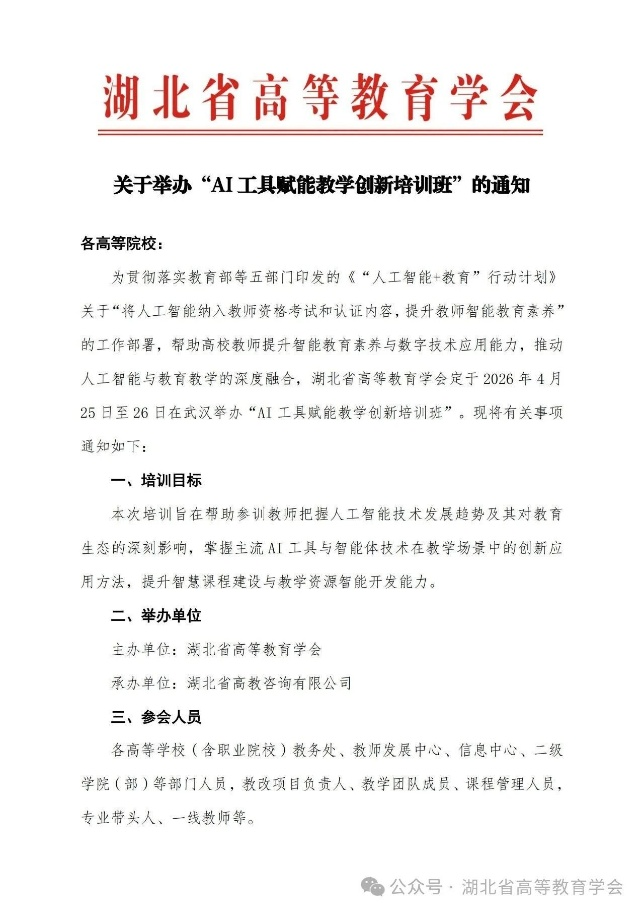
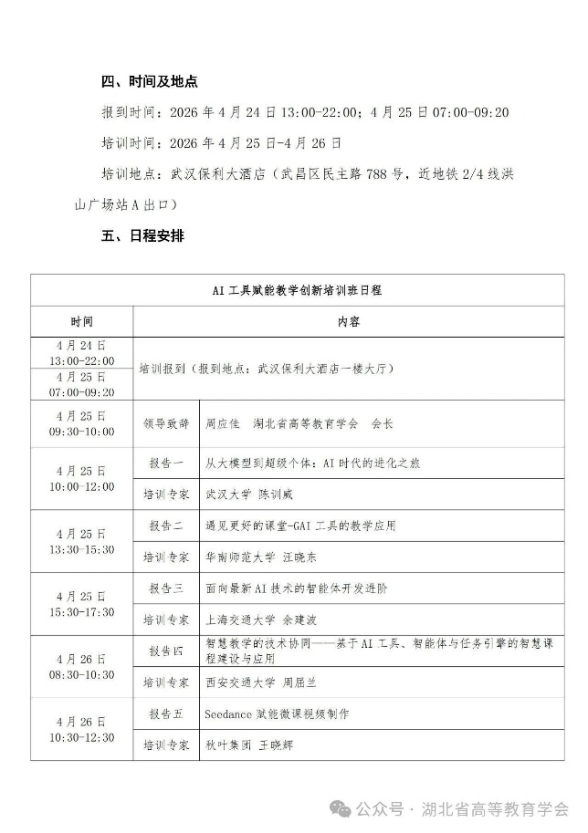
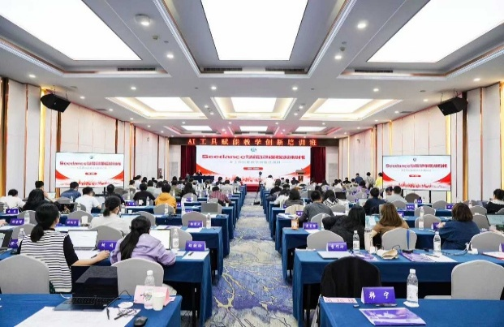
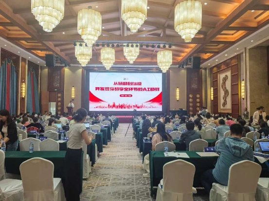
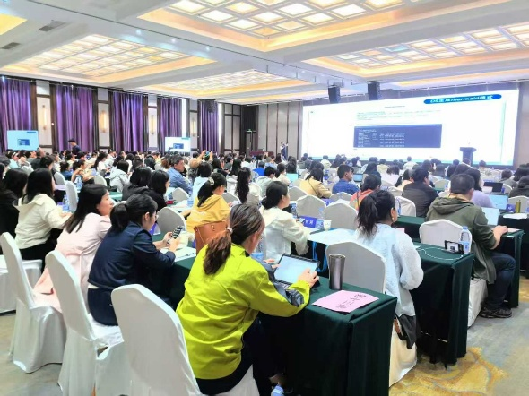
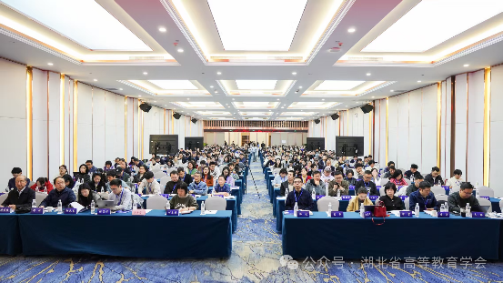

2025年-2026年，湖北省高等教育学会多次邀请秋叶集团讲师做研修班课程交付。先后做了Deepseek效率办公、AI赋能教学创新、AI赋能学术科研全流程、AI agent教学助手开发、AI赋能教学资源库建设、AI赋能教学PPT设计、Seedance赋能微课制作等各类专题报告10余场次，受益学员3000余名



王晓辉 AI+数字人

朱超 AI智能体

郑远霞 AI+科研

郑宇 Agent助手开发
合作案例 – 湖北省高等教育学会